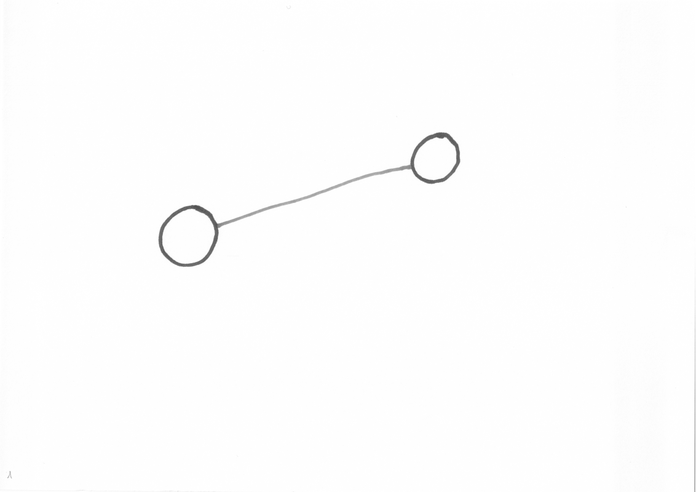
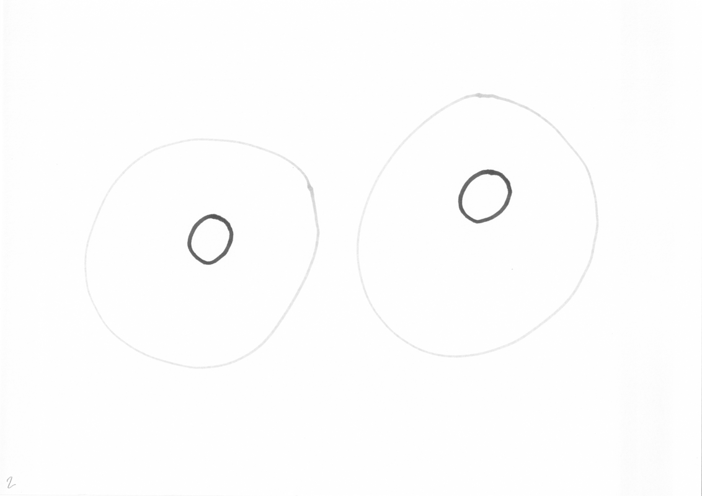
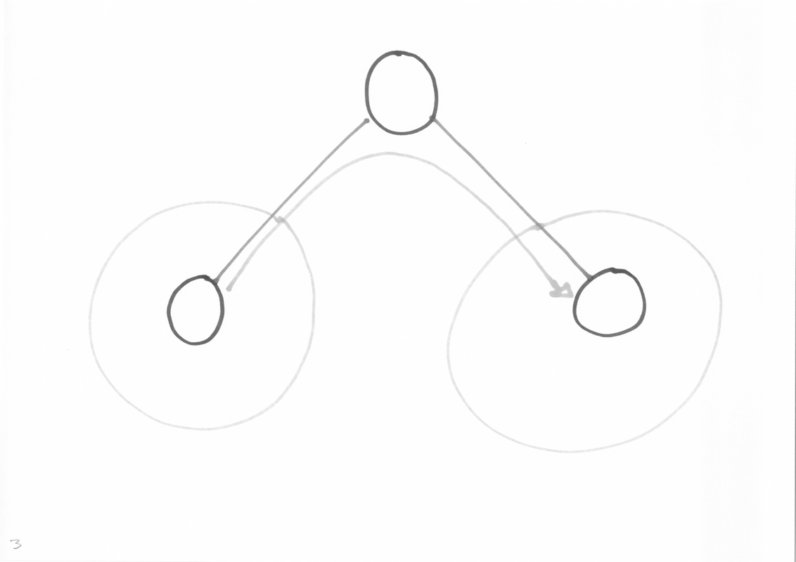
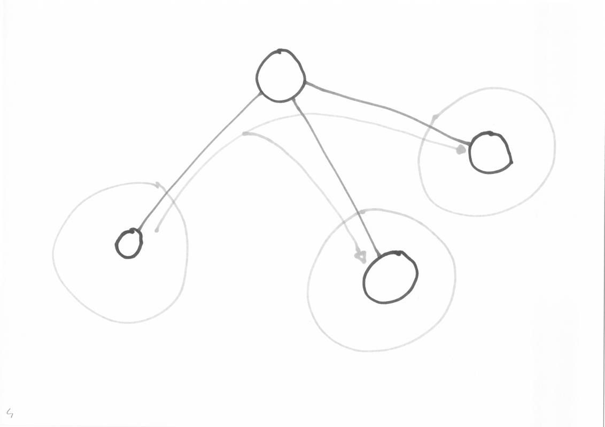
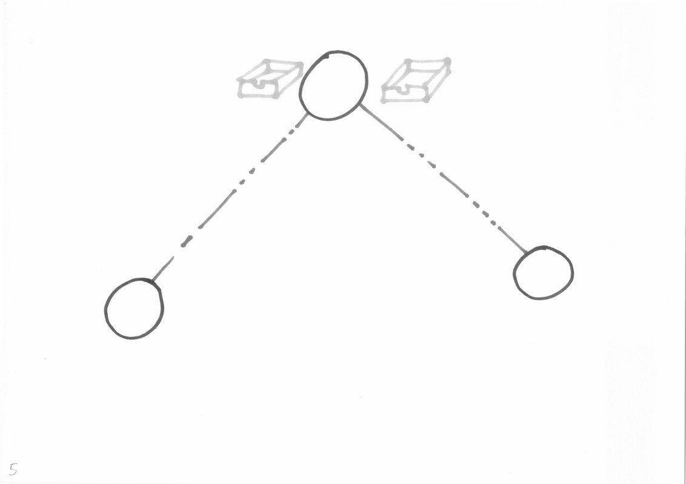
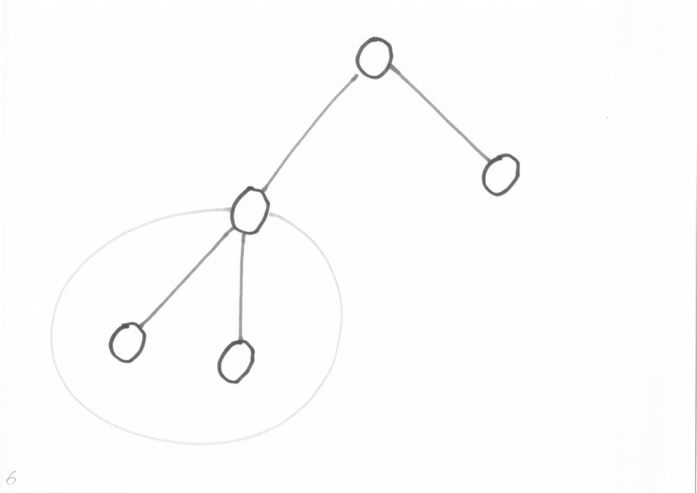
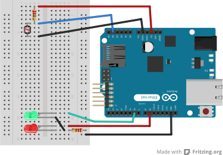

Mathieu Lecarme
athoune pour irc, twitter, github…






Message Queue Telemetry Transport
MQTT a été initialement conçu par des chercheurs d'IBM et de Cirrus Link Solution comme un remplaçant de SNMP, simple, léger et résilient.
Il fonctionne à l'envers, on s'abonne pour recevoir des informations, plutôt que l'inefficace polling.
Les clients sont actifs, envoient et reçoivent des évènements.
MQTT est un protocole bien spécifié, en version 3.1, implémenté par différents clients et serveurs. Il souhaiterait devenir un standard OASIS. Certaines implémentations sont libres et massives comme RabbitMQ ou plus légères, comme Mosquitto.
Il existe MQTT-S, une sous norme spécifique aux capteurs non TCP/IP (Zigbee, par exemple).
Un message est préparé (topic, payload, qos, retain) et ne sera délivré qu'en cas de disparition brutale du client.
Lors d'une publication, il est possible d'activer le bit retain. Les nouveaux venus recevront ce message dès leur abonnement.
MQTT a plus de 10 ans et est utilisé dans des contextes variés
Mosquitto comme broker.
Un client Arduino avec une photorésistance et une DEL.
Un client Python et des notifications OSX.

La télémétrie n'est qu'un des messages possibles.
MQTT empiète partiellement sur AMQP, XMPP, IRC, SNMP, OSC, etcd …